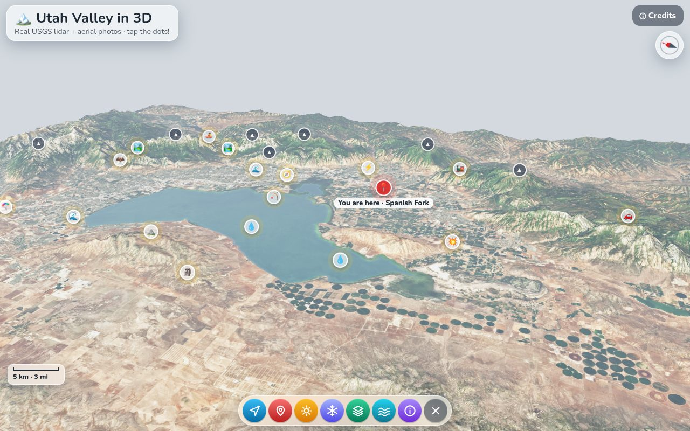

Real USGS lidar elevation and aerial photos of the mountains around Spanish Fork. Fly to Timpanogos and Nebo, change the seasons, and flood the valley with ancient Lake Bonneville!

Explore a real 3D scan of De Westermolen in Holland. Turn on the wind, turn the mill to face it, and peek inside!
Utah Valley: USGS 3DEP (public domain), Sentinel-2 cloudless by EOX (CC BY-NC-SA 4.0). 3D scans CC BY 4.0 — see Credits in each page and the README.